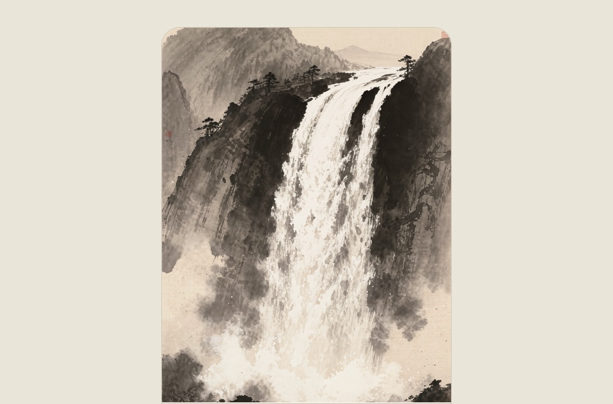
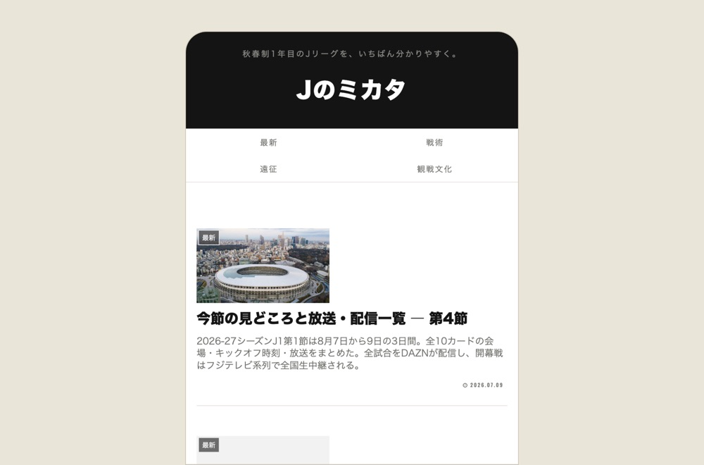
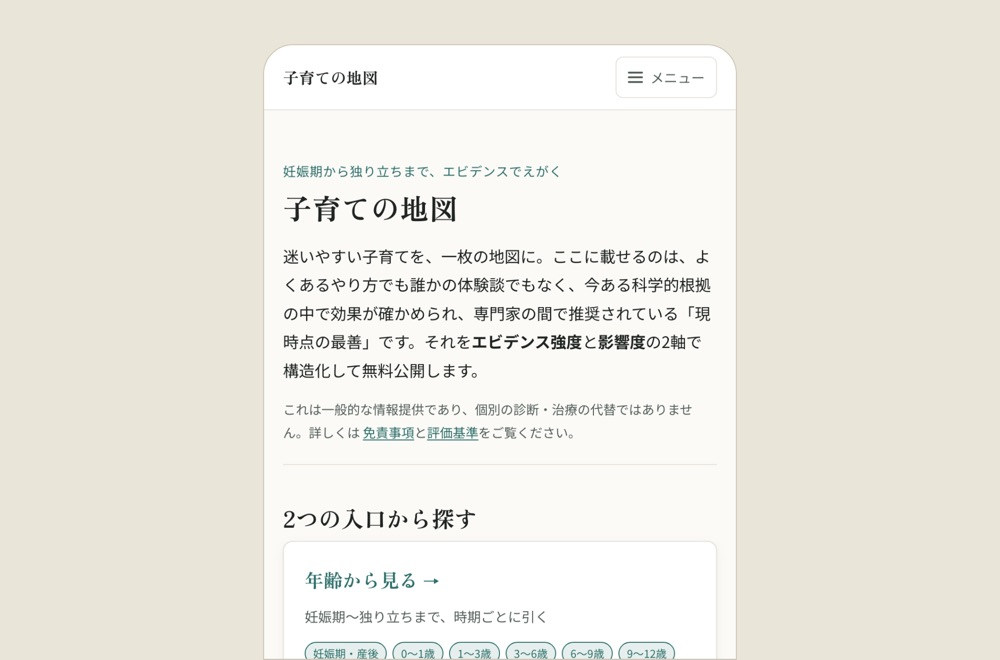

MIYAKE
好きなエンタメの、入り口と出口をつくっています。
WORKS
-

なかみの本棚
読んで線を引いた言葉を、しまっておく場所。本の一行も、母の一言も、同じ棚に。出典は書影から補完でき、集めた言葉は縦組みの画像にして持ち出せます。
IOS —APP STORE
-

Sumi: Living Ink Paintings
水墨画が、ゆっくり動きつづける。眺めるためだけのアプリ。滝・富士・鯉・月夜の竹など全5景が、朝・夕・夜で表情を変えます。買い切り、広告なし、通知なし。
IOS —APP STORE
-
ニュースタンダードラジオ
中学からの同級生ふたりで、30代の仕事・お金・暮らしをゆるく話しています。2023年から、ほぼ毎週。映画や漫画の感想から、真面目な話まで。ながら聴きのお供にどうぞ。
-

Jのミカタ
Jリーグを観に行く人のための、実用の観戦ガイド。全国のスタジアムを、席の見え方・行き方・周辺の宿まで実測でまとめています。秋春制1年目の変更点も追跡中。
WEB —J-MIKATA.NET
-

子育ての地図
迷いやすい子育てを、一枚の地図に。体験談ではなく、科学的根拠が確かめられて専門家の間で推奨されている「現時点の最善」を、エビデンス強度と影響度の2軸で整理しました。
WEB —KOSODATE
-
japantriptools
訪日旅行者が自分で旅程を組むための実用ツール群。空港からの移動、宿の拠点選び、鉄道の選択肢と実際の費用を比較できます。こちらは英語のみ。
WEB —JAPANTRIPTOOLS